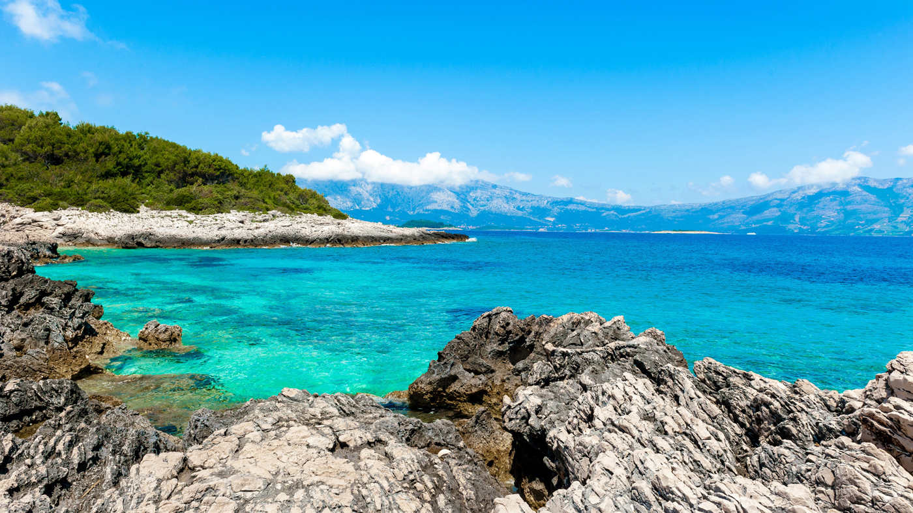

Die Wasser Kroatiens sind eine der saubersten Gewässer Europas. Mit 33.200 Quadratkilometern See, hat Kroatien sehr viel Wasserfläche. Neben den 25 weiteren Flüssen, ist der längste Fluss der Save mit 562 km der länste Fluss Kroatiens. Der Vrana See ist der größte See mit 5,8 Quadratkilometern Wasserfläche. Wasser. Außerdem ist Kroatien eins der trinkwasserreichstn Länder weltweit. Ein Teil der Landfläche grenzt an das adriatische Meer.
